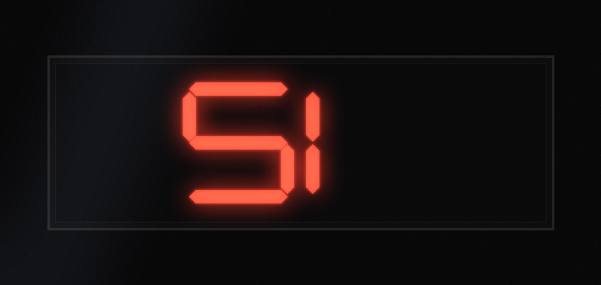

播出：1999-11-23 03:33 · 主播：夜莺
电梯往下走的时候，夜莺接着念那封信。写信的人说，轿厢里有一面镜子，正对着楼层显示——老式的红色数码管，七根灯棍拼出来的数字。他不敢抬头看显示——他就看镜子。
"镜子里显示的，是 51 层。"信里写。他跟别人说过，别人都说他认错了。镜子能有什么错呢。
夜莺说，她托人照着信里的描述，把那人从镜子里看到的显示，原样复原了出来。就是这样的：

"51 层。"夜莺笑了一声。她没再往下说，只问了一句："电梯真正要去的，是哪一层？"
电梯真正要去的那一层：
镜子里的电梯，门是开着的
← 返回 A 面